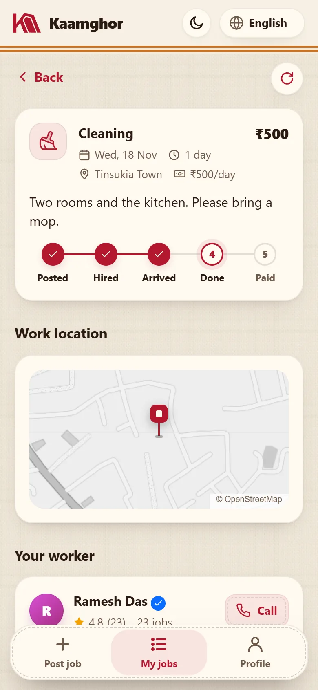
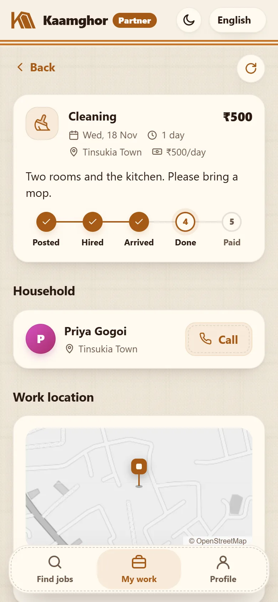
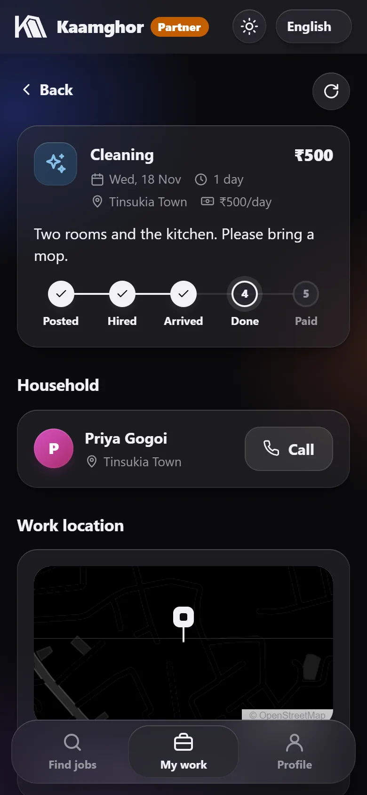
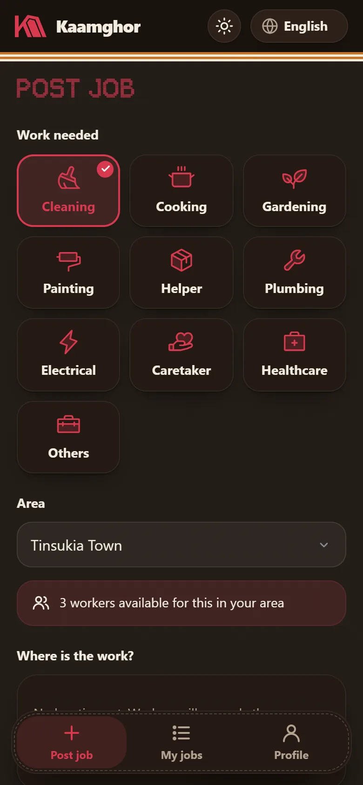
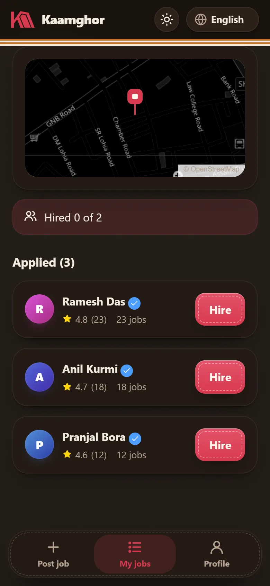
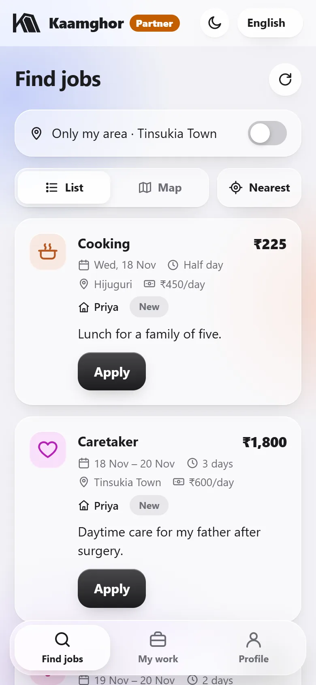
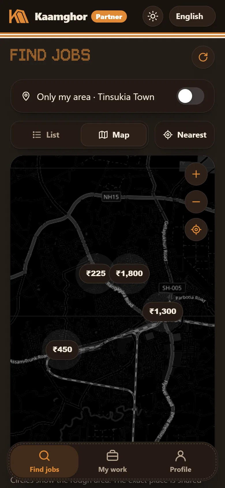

Find a cleaner, cook or painter in Tinsukia.
Find a day's work in Tinsukia.
Say what needs doing and on which day. People from your part of town who do that work apply, and you choose who comes.
Homes near you post work every day, and every job shows its daily rate before you apply. You pick the ones that suit you.
Free to join. It installs straight from this page, so there's no Play Store download, and it works in English, অসমীয়া and हिन्दी.
One job, two phones. Priya in Tinsukia Town hired Ramesh to clean two rooms and the kitchen. This is what each of them sees once he has arrived.




What a day's work costs.
What a day's work pays.
These are the rates the app suggests when a job is posted. Half a day is paid half.
You can offer more than the suggested rate, but not less than the minimum for that kind of work. For two people, it's twice the rate.
A home can offer more than this, never less than the minimum. A Thikadar bringing a crew is paid the rate for each person in it.
From posting the job to paying for it.
From seeing the job to getting paid.
Every job in the app moves along this line. Both of you see the same one.
You post the job
Pick the kind of work, the day, how long, and how many people. The app fills in the suggested rate and shows how many people nearby do that work.


People apply, you hire
Each applicant shows their rating, how many jobs they've done, and a blue tick if their ID has been checked. Their phone number appears only after you hire them.


Both of you confirm, then you pay
When they arrive, they tap Arrived and you confirm it. The same happens when the work is done. Then pay by UPI, cash or online and rate each other.
A job is posted near you
You see it straight away, with the date, the area and the daily rate. Turn on “Only my area” to hide the far ones.


You apply and get hired
The map shows roughly where each job is, so you can choose ones you can reach. The exact house is shared only when you're hired.


You mark arrived and done, they pay
The home confirms each step, so nobody can say you didn't come. You're paid by UPI, cash or online, and a good rating helps you get the next job.
Letting someone into your home, or walking into a stranger's.
Both are a risk, so the app is careful about who you're dealing with and what each side can see.
What gets checked
- Every mobile numberNobody can post or apply until their number is confirmed by an SMS code.
- Workers' ID, if they upload itKaamghor looks at it and adds the blue tick. It isn't a police check, and the app says so.
- Each side, after every jobHomes rate workers and workers rate homes. Ratings stay on the profile.
What stays private
- Phone numbersShown to the other person only after a hire, never on a public profile.
- The exact addressWorkers see the rough area until they're hired.
- ID documentsOnly Kaamghor staff can open them.
Download
Homes and workers use separate apps, so each one only shows what you need. Install the one that's for you.
Does it cost anything?
Joining is free for both. When a job is finished, Kaamghor keeps a small share of the worker's pay.
Why isn't it on the Play Store?
It doesn't have to be. Tap Install and your phone adds it to the home screen. It's a small download and copes with a weak signal.
I have an iPhone
Open the app in Safari, tap the Share button, then “Add to Home Screen”.
Which parts of Tinsukia?
Tinsukia Town, Hijuguri, Borguri, Rangagora Road, Bordoloi Nagar and Chandmari for now.